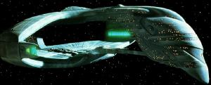

Impero Romulano - Classe D'deridex |
|  |
Dati di una nave tipica di questa classe:
Categoria: Incrociatore pesante
Capacità: Oltre 1.500 membri di equipaggio e truppe
Motori: Un sistema warp a singolarità artificiale con due gondole, due
sistemi ad impulso
Dimensioni: 1.041,65 metri di lunghezza, 772,43 metri di larghezza,
285,47 metri di altezza
Massa: 4.320.000 tonnellate (stimata)
Velocità massima: Warp 9,6 (osservata)
Armi: Sei distruttori, due lanciasiluri
La Flotta Stellare ha intercettato per la prima volta un vascello di questa
classe nel 2364.
| Belak Componente della flotta raccolta dalla Tal Shiar e dall'Ordine Ossidiano, dispersa nel 2371 in una battaglia contro il mondo natale dei Fondatori del Dominio. | The Die is Cast |
| Devoras Comandata dall'ammiraglio Mendak. | Data's Day |
| Dividice Attraccato a Deep Space Nine in lista di attesa per eseguire delle riparazioni. | Inter Arma Enim Silent Leges |
| Genorex Attraccato a Deep Space Nine in lista di attesa per eseguire delle riparazioni. | Inter Arma Enim Silent Leges |
| Haakona Comandata dal subcommander Taris. Nel 2365 si trova nella Zona Neutrale dove intercetta i diari della Yamato, ma il virus iconiano in essi contenuto infetta il computer della nave. Quando l'Enterprise scopre come rimuovere il virus iconiano dai loro computer, trasmette la preziosa informazione alla Haakona, proprio mentre il virus ha attivato l'autodistruzione del vascello. | Contagion |
| IRW Khazara Comandata dal commander Toreth. | Face of the Enemy |
| Makar Componente della flotta raccolta dalla Tal Shiar e dall'Ordine Ossidiano, dispersa nel 2371 in una battaglia contro il mondo natale dei Fondatori del Dominio. | The Die is Cast |
| Terix Comandata dal commander Sirol e in seguito dal commander Tomalak. | The Pegasus All Good Things... - Part II |
| [Senza Nome] Distrutto da Gomotuu. | Tin Man |
| [Senza Nome] | Tin Man |
| [Senza Nome] Comandata dal commander Tebok e dal subcommander Thei. | The Neutral Zone |
| 2 [Senza Nome] | The Enemy |
| [Senza Nome] Comandata dal commander Tomalak. | The Enemy |
| [Senza Nome] | Data's Day |
| [Senza Nome] | The Mind's Eye |
| [Senza Nome] | Timescape |
| [Senza Nome] | Unification - Part II |
| [Senza Nome] Occultata in orbita attorno a Deep Space Nine, pronta a distruggere la stazione e il wormhole. | Visionary |
| [Senza nome] Intercetta il runabout con a bordo Odo e Garak. | Improbable Cause |
| 3 [Senza Nome] Uno è stato distrutto dalla Prometheus | Message in a Bottle |